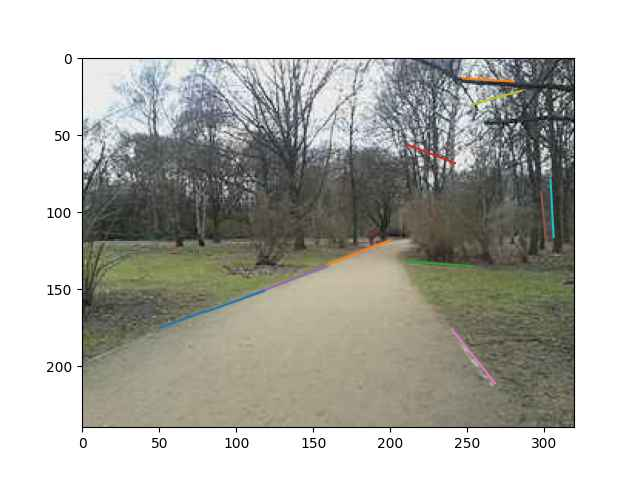

İmaj / Görüntü İşleme Teknikleri
Standart bazı sayısal görüntü işleme tekniklerini listeleyeceğiz, referans amaçlı, mümkün olduğu kadar yaygın bilinen kütüphaneleri kullanarak kod örnekleri verilecek.
Küçültmek, Büyütmek
Ünlü kameracı görüntüsü üzerinde küçültme yapalım,
from PIL import Image
img = Image.open('img3.jpg')
new_img = img.resize((100,100), Image.BICUBIC)
new_img.save("img3_2.jpg", "JPEG")
Boyut değişimi yapılırken ANTIALIAS, BICUBIC, BILINEAR ve
CUBIC seçenekleri kullanılabilir. Küçültme, büyültme farketmez, aynı
seçenekler var, ölçü değişimi olduğunda muhakkak aradeğerleme
(interpolation) yapılması lazım, bahsedilen seçenekler bu
aradeğerlemenin nasıl yapılacağını kontrol ediyor. Aradeğerleme lazım
çünkü mesela büyütme durumunda 100x100 boyutunda bir resim 300x300
olacaksa bu 40,000 tane yeni piksel yaratılması demektir, bu
piksellere bir değer atanmalı, bu değerler mevcut değerler
kullanılarak bulunabilir, bilinen yakın olan piksellerin ortalama
değeri mesela, lineer ağırlıklı, ya da başka türlü. Üstteki seçenekler
hangi aradeğerlemenin seçileceğini kontrol ediyor.
Biraz önce küçültülen resmi şimdi geri büyültelim,
new_img3 = new_img.resize((340,340), Image.BICUBIC)
new_img3.save("img3_3.jpg", "JPEG")
Biraz kalite kaybı oldu muhakkak bu küçültme yaparken yaşanan veri kaybı yüzünden.
Bölge Kesip Çıkartmak (Crop)
x=100,y=100 ile x=200,y=200 noktalarının oluşturduğu kareyi çekip çıkartmak istersem,
new_img4 = img.crop((100, 100, 200, 200))
new_img4.save("img3_4.jpg", "JPEG")
Pürüzsüzleştirme (Smoothing)
Pürüzsüzleştirme, ya da bulanıklaştırma işlemi yapmak için bir scipy
bazlı bir de pür numpy bazlı bir teknik göreceğiz.
import numpy as np
import matplotlib.pyplot as plt
import pandas as pd, imageio
import scipy.ndimage as ndimage
img = imageio.imread('../../../func_analysis/func_70_tvd/lenad0.jpg')
print (img.shape)
(225, 225)
img2 = ndimage.gaussian_filter(img, sigma=1)
print (img2.shape)
imageio.imwrite('img2.jpg',img2)
(225, 225)
def initialize_kernel(size , sigma):
w, h = size
x = np.linspace(-1,1,w)
y = np.linspace(-1,1, h)
x_cor, y_cor = np.meshgrid(x, y)
kernel = 1/(2*np.pi*np.power(sigma,2) )*\
np.exp((- (x_cor ** 2 + y_cor ** 2) )/
(2*np.power(sigma,2)))
kernel = kernel/np.sum(kernel) # normalization
return kernel
def conv2d(image, ftr):
s = ftr.shape + tuple(np.subtract(image.shape, ftr.shape) + 1)
sub_image = np.lib.stride_tricks.as_strided(image, shape = s,
strides = image.strides * 2)
return np.einsum('ij,ijkl->kl', ftr, sub_image)
img1 = conv2d(img,initialize_kernel((3,3),1))
print (img1.shape)
imageio.imwrite('img1.jpg',img1)
(223, 223)
Çizgiler
Bir imajdaki ana çizgileri bulmak artık görüntü işlem biliminde demirbaş haline gelmiş Canny kenar bulucusu ve Hough transformu ile yapılabilir.
from PIL import Image, ImageDraw
from skimage.transform import probabilistic_hough_line
from skimage.feature import canny
from skimage import data
im1 = Image.open('in1.jpg').convert('L')
edges1 = canny(np.array(im1), 2, 1, 25)
lines1 = probabilistic_hough_line(edges1, threshold=10, line_length=30,line_gap=3)
im1 = Image.open('in1.jpg')
for line in lines1:
p0, p1 = line
plt.plot((p0[0], p1[0]), (p0[1], p1[1]))
plt.imshow(im1)
plt.savefig('img4.jpg',quality=40)

Kayan Pencere İçinde İşlem (Sliding Window)
Bir görüntü, ya da genel olarak bir matris üzerinde bazen ufak bölgelerde işlem yapmak isteyebiliriz, mesela görüntünün her 16 x 16 piksel büyüklüğündeki bölgesine bakıp orada bir yüz aramak gerekebilir, ya da 5 x 5 alt grupların ortalama değeri lazımdır, bir tür pürüzsüzleştirme işlemi için. Kaydırılan pencere bizim tanımladığımız ölçüdeki bir pencereyi tüm imaj üzerinde kaydırarak o anda baktığı matris değerlerini alıp onlara bir işlem uygulayabilir. Bir bölge bitince kaç piksel yana, alta kayılacağı programcı tarafından tanımlanabilir, 3 x 3 pencere iki piksel yana kaydırılır mesela.
Potansiyel pürüzler görüntü üç noktalarında ne olacağı, 3 x 3 pencere kısmen
dışarı taştığında kısmı değerler döndürebilir sadece, bu noktalara ne yapılacağı
programcıya kalmış, taşan bölgelerde nan koyulabilir, ya da pencere içindeki
değerler tekrarlanabilir.
def sliding_window(image, stepSize, windowSize):
for y in range(0, image.shape[0], stepSize):
for x in range(0, image.shape[1], stepSize):
yield image[y:y + windowSize[1], x:x + windowSize[0]]
arr = np.array([[1,2,3,4],
[2,3,4,5],
[3,4,5,6],
[4,5,6,7]])
for i,x in enumerate(sliding_window(arr,1,(2,2))):
print ('----------------------------')
print (x)
if i==5: break
----------------------------
[[1 2]
[2 3]]
----------------------------
[[2 3]
[3 4]]
----------------------------
[[3 4]
[4 5]]
----------------------------
[[4]
[5]]
----------------------------
[[2 3]
[3 4]]
----------------------------
[[3 4]
[4 5]]
Üstte taşma olan yerler eksik donduruldu, tekrarlama için
yield np.resize(image[y:y + windowSize[1], x:x + windowSize[0]],windowSize)
kodu kullanılabilir.
Kaynaklar
[1] Haidar, https://medium.com/@haidarlina4/tutorial-convert-an-image-into-a-sketch-step-by-step-e00e2f312521
Yukarı